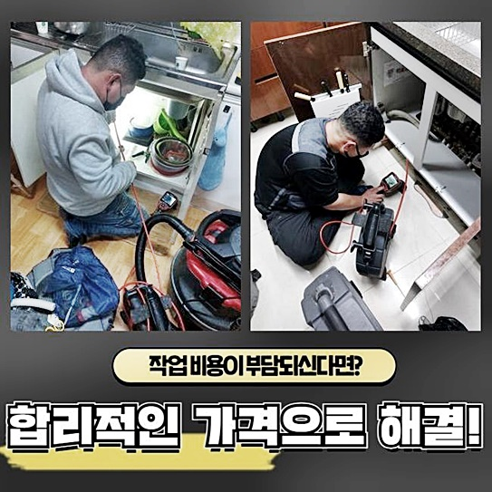
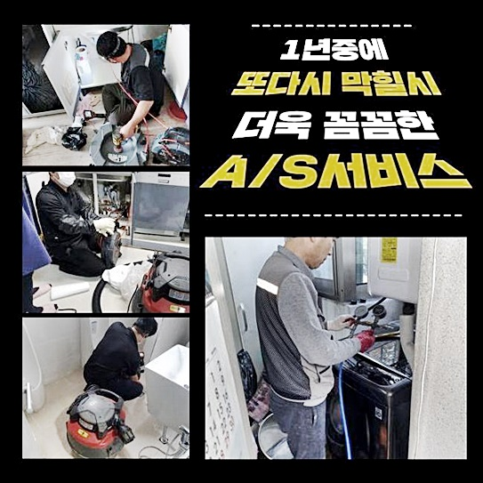
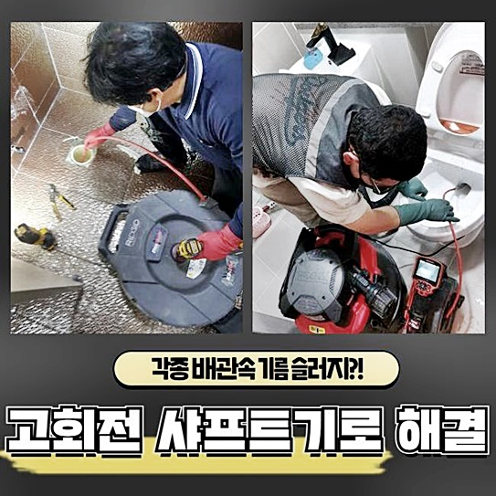
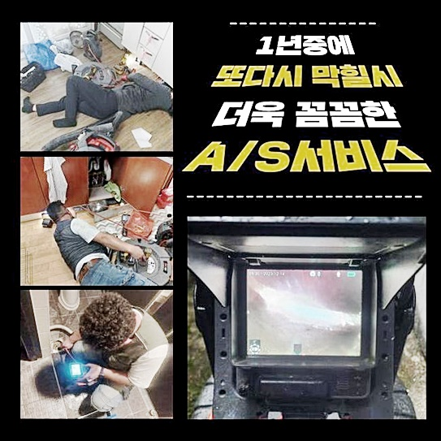
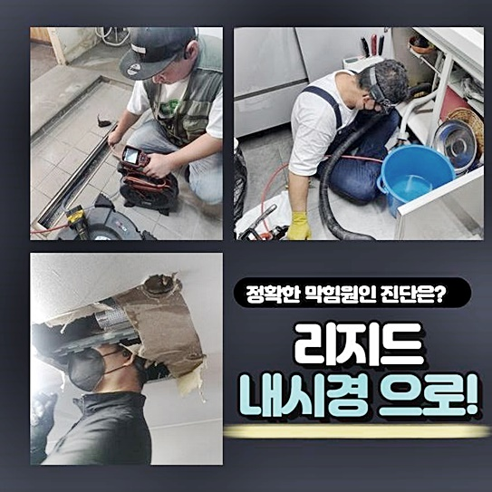
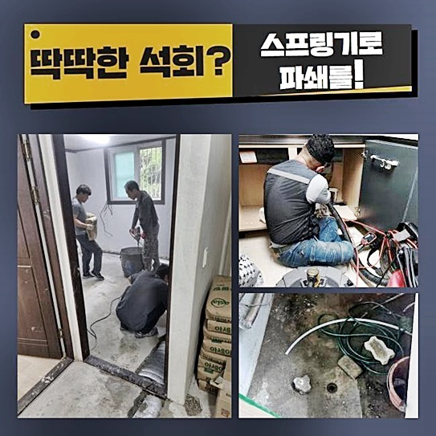

🏠 남동구 남촌동변기뚫음 논현고잔동 고압세척비용 누수탐지공사
인천 남동구 변기막힘 전문 시공 후기

📋 작업 개요
- 위치: 인천 남동구, 남동구, 인천
- 서비스 유형: 변기막힘, 배관막힘, 누수수리, 역류해결, 뚫는업체, 배관청소, 고압세척, 설비공사, 배관보수, 악취차단
- 작업 일시: 2024. 6. 14. 16:45
- 업체명: 하수구수사대 (010-5615-2118)
🔍 문제 상황
남동구 남촌동변기뚫음 논현고잔동 고압세척비용 누수탐지공사
배수구가 갑작스레 막힌다면 손님들은 무슨 수로 말썽을 극복하고 있으신가요
많은 분께서 자체적인 기술을 토대로 개문하려는 노력을 실행하곤 하죠
뚫어뻥이나 세제 등을 적용해보시거나 고온의 물을 생각하는 경우도 있답니다
이런 것들이 헛수고에 불과하다고 할 수는 없겠지만 오히려 상황을 고착화시킬 수도 있으므로 무리한 시도는 억제하시는 게 마땅한 방책이죠
부적절한 압력을 가한 경우 하수관을 교환하여야 하는 상황에 다다를 수도 있죠
이번엔 현장상황을 활용하여 배관막힘과 관련하여 제시해드릴 계획이니 약간의 시간만 할당해 주신다면 보탬이 닿을 것이라 예상합니다
욕실배관에선 이용한 수돗물이 들어가서 슬러지가 곧잘 누증되곤 한답니다
파이프 내에 쌓임이 계속되면 관 정체에서 끝나는 것이 아니라 실체적인 기능성도 심히 변화할 수 있어서 주의가 요망돼요
이러한 일로 흔하게 맞닥뜨릴 수 있는 것은 냄새나 역류와 같은 현상들이 대표적이예요
상황이 부정적으로 치닫기 전에 이물질 등이 들어가지 않도록 생활해 나가야 갑작스레 사용하지 못하는 말썽을 방예할 수가 있답니다
다소 안일한 생각으로 관리한 탓에 급히 우리를 수소문하는 손님들이 생각외로 많습니다

🔎 원인 분석
💡 전문가 진단: 정밀 진단 장비를 사용하여 슬러지의 고착 여부를 판명하고 타격/세척 작업을 실시했습니다.
금일 안내해드릴 세대 역시 배관의 문제들로 조속한 방문을 요청하셨는데요
거실의 화장실 배관에서 물이 안내려가기 시작했고 다른 배관쪽에서는 물이 넘치는 상황이 일어나는 상황이라 조속히 요청한 곳에 나가보았답니다
도착한 장소는 주상복합이었고 바로 아래층에 상가 시설물이 배치된 구조였어요
또한 1층 천장에는 바로 윗집 배수관이 노출형태로 설비된 모양새였죠
여러지점에서 파이프 문제가 다양한 형태로 나타나고 있다는 걸 알아보고 외부쪽의 파이프부터 시공에 들어가기로 하였답니다
밖에서부터 집 내부의 배관으로 배수관 세정작업을 감행하였답니다
그렇게 한 까닭은 배수파이프는 가정에서 쓴 물이 외부에 존재하는 배수관까지 결속된 상황이기 때문에 한 부분이 정체되면 다른쪽에서 막힘이 생겨서예요
그렇기에 전반적인 조치가 불가피하였답니다
손님분께서는 욕실 안에서 배수로로 물을 내려보내면 몇 분 지나 주방쪽과 화장실의 다른 위치에서 탁수가 위로 올라오게 되는 모습이 직관되어 상당한 고민에 빠져 있어셨는데요
배수관의 특정한 지점에 이상이 발발하여 그것과 관계된 배수파이프에서 동시적으로 사태가 발발한 정황으로 추정할 수 있었답니다
이렇게 배관막힘이 생겼을 시는 단순하게 막혀버린 지점만 조치하는 것으로 마무리되지 않고 대략적인 배관 클리닝이 불가피합니다
차단된 곳의 찌꺼기만 소멸시키는 것으로 완료하면 다른 배관쪽에서 지속해서 문제들이 나타날 수 있기에 배수시스템 내부의 이물을 전부 제거하는 시공이 반드시 진행되어야 합니다
배관이 이물에 의해 더렵혀지면 수도가 빠질 수 있는 스페이스가 협소해지고 물이 점점 더디게 흘러가서 오수가 넘치는 상황에까지 연결될 수 있는것이죠

🔧 작업 과정
이번에 방문한 곳은 문제가 생긴데가 바깥으로 노현되어 있는 파이프였답니다
그때문에 상가 천장 부근에서부터 수리를 이행하기로 마음먹었고 혹시나 일어날 수 있는 사태에 예비하여 주변을 커버하였어요
배관 측면에 구멍을 뚫고 내부의 소제를 시작하는 것이죠
바깥에서 내부의 배관방향으로 청소를 속행하고 이어서 안쪽에서 밖으로 재차 청소를 진행해 보았습니다
양방향에서 세척을 속행하면 한층 정결하고 경제적인 배관 뚫음이 완성됩니다
개별적인 상황에 의거해서 수리하려는 방안을 이처럼 다양화할 수 있답니다
건물 전체의 시스템을 알아내고 세부적 사안을 보고 시공하는 거라서 위험요소를 최대한 배제한 모습으로 배관이 막힌 걸 진행할 수 있답니다
하층의 천장쪽에 노현된 파이프의 일부분에 낸 곳을 중심으로 내측에서는 샤프트기기를 동원해 상황을 타개해 나가기로 결단하였어요
샤프트 기기는 하수관 소제에 필수적인 물건으로 쇠사슬 모양으로 제조된 상단 부분이 배수관 내부를 빈틈없이 회전해 나가면서 기름때 등을 없애내가고 있답니다
차단된 부위를 뚫어내고 세부적인 청소를 이행키 위해 배관내시경을 이용하여 내부의 모습을 관측하면서 샤프트기기를 가동시켰어요
오직 통수가 되는 것에만 신경쓰는 것이 아니고 바깥의 배수관까지 연결된 곳이 깔끔해지는 걸 타깃으로 정하여 두 곳에서 세척을 계속해서 해야만 했습니다
건축물 전반의 파이프의 크기가 방대하여 한부분에서만 시공하는 것보단 양쪽에서 진행하는 게 한층 빠른 결과를 만날 수 있죠
이렇게 양쪽에서 공사를 하였더니 어언지간 정결해진 배수구 안을 목도할 수가 있었죠
문제의 화장실로 위치를 옮겨 배수테스트를 진행해 보았습니다
이상없이 관이 뚫리고 벽면까지 깔끔해졌다면 예전처럼 개수대나 다른 욕실부분으로 역류증세가 나타나지 않고 외부로 온전하게 배출되는 것입니다
주방공간을 포함하여 문제가 생겼던 배수구쪽에서 증세여부를 판단하였는데 전과 같은 문제가 나타나지 않고 시원하게 물이 없어졌기에 역류 및 막힘 수보를 너끈히 종결하게 되었답니다
차단된 배관을 뚫기 위해선 전반적인 설비 이해도가 있는 상태에서 시행하는 게 중요합니다
간혹 온전한 지점까지 망가뜨릴수 있기에 능숙한 실력을 바탕으로 한 기술진이 시행해야 하는 것이죠
파이프쪽에 장애가 발생하게 되면 다양한 비용 등이 생길 수 있어서 커다란 상황에 마주하기 이전 정기적으로 보수하여 하수관을 오랜시간 유지하실 것을 권장합니다
관벽에 이물이 누적되지 않게만 관리가 단행된다면 역류증상이나 고약한 냄새가 나는 부분없이 깔끔한 상태로 욕실 사용을 할 수 있죠


✅ 작업 완료
배관내시경을 이용한 관측에서부터 개통하는 일에 이르기까지 배수관에 대한 일에 대해서는 언제나 우리들이 앞장서고 있답니다
빠른 조치를 원하시는 분들은 예약한 시간에 정확하게 방문해드리는 저희에게 문의를 부탁드립니다
어느 지역이든 현장 답사를 진행중에 있고 별도 방문비용을 존재하지 않아서 편안하게 무료견적을 받으실 수 있답니다
또 진솔한 태도를 토대로 의뢰인분의 염려를 우선적으로 없게끔 조치하고 있으므로 더욱 신뢰하실 수 있을 것입니다
본 글에서 설명해 드렸던 부분 말고도 의문점이 있으시다면 주저치 말고 물어봐 주십시오




⚠️ 베란다 누수 및 방수 관리 방법
- ✅ 비가 많이 올 때 창틀 주변이나 아래층 천장에 얼룩이 생기는지 정기적으로 확인해 보세요.
- ✅ 우수관 주변 실리콘 마감이 들뜨거나 깨진 틈새가 있는지 손상 여부를 수시로 체크하세요.
- ✅ 베란다 바닥 타일의 줄눈(메지)이 소실되면 그 틈으로 물이 침투하여 누수가 유발됩니다.
- ✅ 누수 의심 증상 발견 시 방치하면 아래층 손실이 커지므로 즉시 전문가의 진단을 받으십시오.
💡 핵심 정리
- 확실한 장비 작업(내시경 점검 및 샤프트 스케일링)으로 원인을 뿌리 뽑습니다.
- 작업 후 1년 이내에 동일한 부위 재발 시 100% 무상 A/S 서비스를 보장합니다.
- 서울 · 경기 · 인천 전 지역에 24시간 언제든 긴급 출동할 수 있도록 항시 대기 중입니다.
❓ 자주 묻는 질문 (FAQ)
🚨 인천 남동구 변기막힘 문제로 고민이신가요?
정확한 원인 진단과 확실한 시공으로 재발 없는 해결을 약속드립니다.
24시간 긴급 출동 | 서울 · 경기 · 인천 전지역 | 1년 내 재발 시 무상 A/S